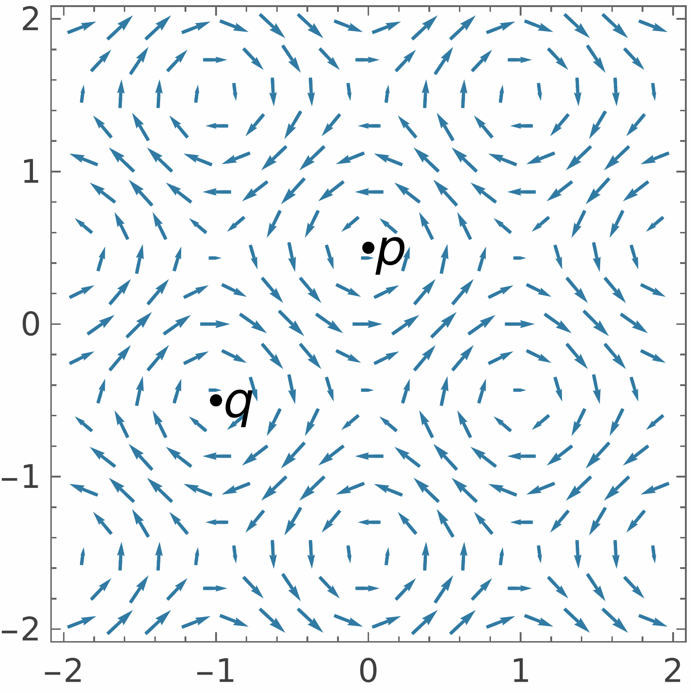
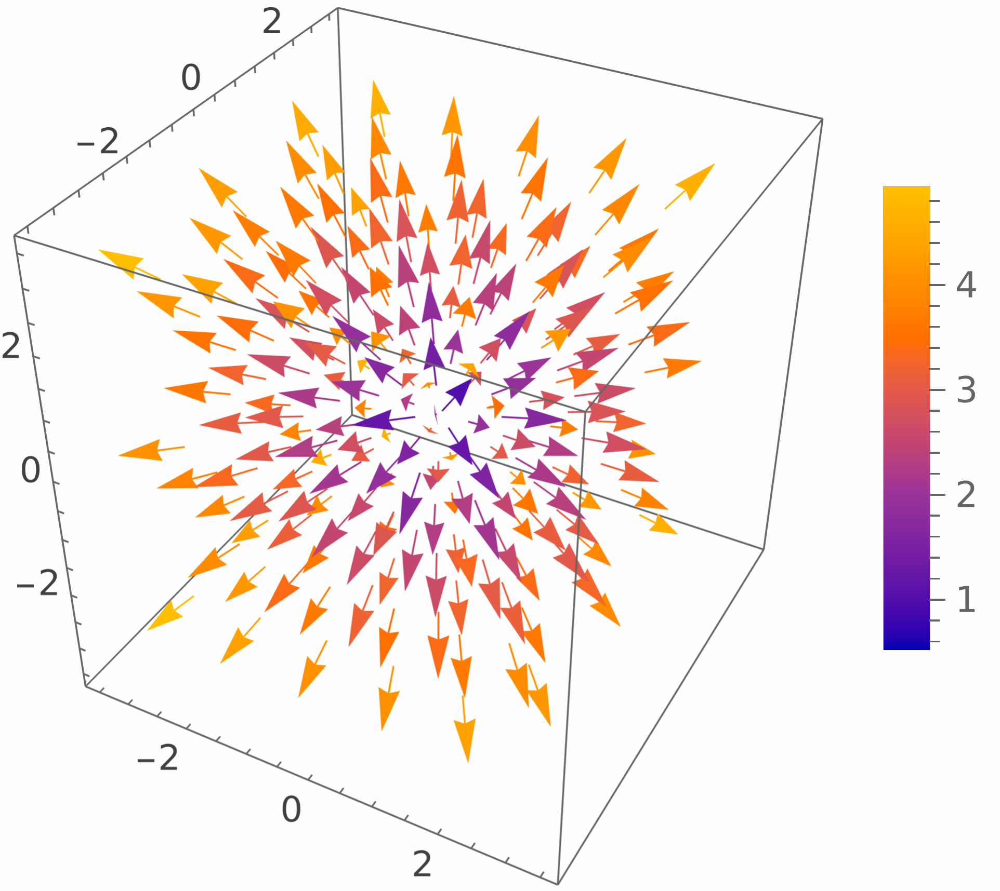
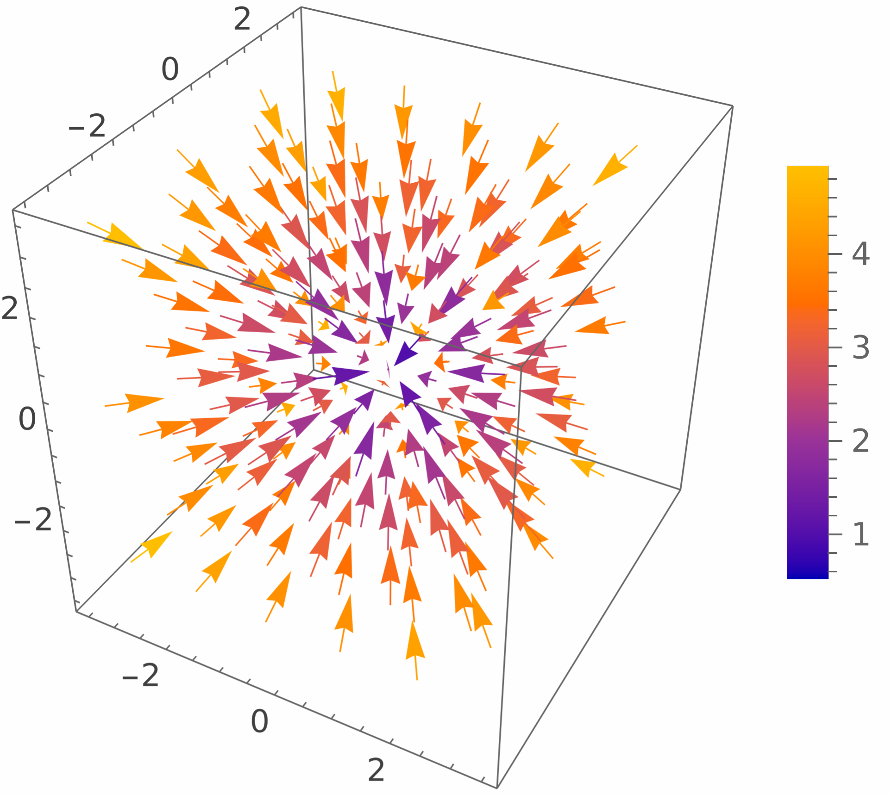

Curl and Divergence
In this section we introduce two differential operators that we can apply to vector fields in $\RR^3$, called curl and divergence. The curl will allow us to determine whether a vector field is conservative, and both the divergence and curl will be related to fluid flow.
Curl of a Vector Field
The curl of a vector field can be defined with a lengthy formula which may be a bit hard to memorize. A way to make it more memorable is to introduce a formal vector known as the nabla operator.
Let's give a geometric interpretation of the curl of a vector field. Suppose that $\bf{F}$ is a vector field representing the velocity flow of some fluid in $\RR^3$, and $p$ is any point. If $(\curl \bf{F})(p)\neq\bf{0}$, then the particles near $p$ in the fluid will tend to rotate about the axis pointing in the direction of $(\curl \bf{F})(p)$. The direction of this rotation is determined by the right hand rule. If $(\curl\bf{F})(p)=\bf{0}$, then there is no rotation at $p$. We say that $\bf{F}$ is irrotational at $p$ if $(\curl\bf{F})(p)=\bf{0}$.
For example, consider $\bf{F}(x,y,z)=\langle \cos(\pi y),\sin(\pi x),0\rangle$. On the right we have a representation of the vector field on the $xy$-plane. Using the geometric interpretation of the curl, we see that for the points $p$ and $q$ shown, we have
- $(\curl \bf{F})(p)$ points in the direction of the $z$-axis.
- $(\curl \bf{F})(q)$ points in the direction of the negative $z$-axis.

Solution.
Using the definition of the curl, we have \[ \begin{aligned} \curl\bf{F} = \left\lvert \begin{array}{ccc} \bf{i} & \bf{j} & \bf{k} \\ \frac{\partial}{\partial x}& \frac{\partial}{\partial y}& \frac{\partial}{\partial z}\\ z^2 & -xy & 2xyz \end{array} \right\rvert = \langle 2xz,-2yz+2z,-y\rangle. \end{aligned} \]
Conservative Vector Fields and Curl
Here we will see how to use the curl of a vector field $\bf{F}$ in order to determine if it is conservative. A first result is that conservative vector fields are irrotational.
Proof.
The curl of $\nabla f$ is \[ \curl \nabla f = \left\lvert \begin{array}{ccc} \bf{i} & \bf{j} & \bf{k} \\ \frac{\partial}{\partial x}& \frac{\partial}{\partial y}& \frac{\partial}{\partial z} \\ \frac{\partial f}{\partial x} & \frac{\partial f}{\partial y} & \frac{\partial f}{\partial z} \end{array} \right\rvert = \bigg\langle \frac{\partial^2f}{\partial y\partial z} - \frac{\partial^2f}{\partial z\partial y}, \frac{\partial^2f}{\partial z\partial x} - \frac{\partial^2f}{\partial x\partial z}, \frac{\partial^2f}{\partial x\partial y} - \frac{\partial^2f}{\partial y\partial x} \bigg\rangle = \langle 0,0,0\rangle, \] where all of the terms vanish due to Clairaut's theorem.
However, there exist vector fields $\bf{F}$ with zero curl that are not conservative. An example of this is the vector field \[ \bf{F}(x,y,z) = \bigg\langle -\frac{y}{x^2+y^2}, \frac{x}{x^2+y^2}, 0 \bigg\rangle. \] Observe that the domain of $\bf{F}$ is the set of all points $(x,y,z)$ with $(x,y)\neq (0,0)$. One can check that $\curl \bf{F}=\bf{0}$, but it is not conservative. A way to see this is to note that if $C$ denotes the unit circle in the $xy$-plane, parametrized by $\bf{r}(t)=\langle\cos t,\sin t,0\rangle$ for $0\leq t\leq 2\pi$, then \[ \oint_C\bf{F}\,\cdot\,d\bf{r}=2\pi\neq 0, \] so $\bf{F}$ is not conservative.
Nevertheless, when the domain of $\bf{F}$ is the whole $\RR^3$, we have the following result:
With this, we can now determine whether a vector field defined on $\RR^3$ is conservative or not.
Solution.
To check if $\bf{F}$ is conservative, we can just see if $\curl\bf{F}=\bf{0}$. We have \[ \begin{aligned} \curl\bf{F} = \nabla\times\bf{F} = \left\lvert \begin{array}{ccc} \bf{i} & \bf{j} & \bf{k} \\ \frac{\partial}{\partial x}& \frac{\partial}{\partial y}& \frac{\partial}{\partial z} \\ y-\cos z & x+2y & x\sin z \end{array} \right\rvert = \langle 0,\sin z-\sin z,1-1\rangle =\bf{0}, \end{aligned} \] so $\bf{F}$ is irrotational, and thus conservative.
Let's find a potential function $f$ for $\bf{F}$. This means that $\nabla f = \bf{F}$, so we have \[ \frac{\partial f}{\partial x} = y-\cos z,\qquad \frac{\partial f}{\partial y} = x+2y,\qquad \frac{\partial f}{\partial z} = x\sin z. \]
Integrating the first function with respect to $x$, we deduce that \[ f(x,y,z)=\int(y-\cos z)\,dx =xy-x\cos z+C(y,z), \] where $C(y,z)$ depends on $y$ and $z$. If we now differentiate with respect to $y$, we obtain \[ \frac{\partial f}{\partial y}=x+\frac{\partial C}{\partial y} = x+2y \implies \frac{\partial C}{\partial y}=2y \implies C(y,z)=y^2+K(z), \] where $K(z)$ depends on $z$. Consequently, \[ f(x,y,z)=xy-x\cos z+y^2+K(z). \] We still need to know $K(z)$. Taking the partial derivative with respect to $z$, we obtain \[ \frac{\partial f}{\partial z} = x\sin z+K'(z) = x\sin z \implies K'(z)=0\implies K(z)=L, \] where $L$ is a constant. Summarizing, we discovered that \[ f(x,y,z)=xy-x\cos z+y^2+L \] is a potential function for $\bf{F}$ for any $L\in\RR$. Taking $L=0$ (because we only need one potential function), we may take \[ f(x,y,z)=xy-x\cos z+y^2. \]
Divergence of a Vector Field
We now define the divergence of a vector field in $\RR^3$.
Solution.
In this case, the divergence of $\bf{F}$ is \[ \ddiv \bf{F}=0-x+2xy=x(2y-1). \]
If a vector field $\bf{G}$ is the curl of another vector field $\bf{F}$, then one can show that $\ddiv \bf{G}=0$. This follows from Clairaut's theorem as in the proof of the formula $\curl (\nabla f) = \bf{0}$.
We can use this result to show that some vector fields cannot appear as the curl of a vector field:
Solution.
If $\bf{F}=\curl\bf{G}$ for a vector field $\bf{G}$, then we would have $\ddiv \bf{F}=\ddiv \curl \bf{G}=0$. However, \[ \ddiv \bf{F}=1+2yz+2z\neq 0, \] so $\bf{F}$ cannot be the curl of any vector field $\bf{G}$.
Similarly to the curl, the divergence of a vector field $\bf{F}$ can be interpreted in terms of fluid flow. Suppose that $\bf{F}$ is the velocity field of a fluid in $\RR^3$ and $p$ is a point in $\RR^3$. Then $(\ddiv \bf{F})(p)$ represents the tendency of the fluid to diverge out of the point $p$.

Positive divergence

Negative divergence
We also note that a vector field $\bf{F}$ with $\ddiv\bf{F}=0$ is called incompressible.
The Laplace operator
We can combine the gradient and divergence operators to obtain the so-called Laplace operator. If $f$ is a function of three variables, then its Laplacian is the function $\Delta f$ given by \[ \Delta f=\ddiv(\nabla f) = \nabla\cdot (\nabla f) = \frac{\partial^2 f}{\partial x^2}+ \frac{\partial^2 f}{\partial y^2}+ \frac{\partial^2 f}{\partial z^2}. \] This operator appears commonly in the setting of partial differential equations. One such example is the Laplace equation \[ \Delta f = 0. \] The solutions to the Laplace equation are called harmonic functions.